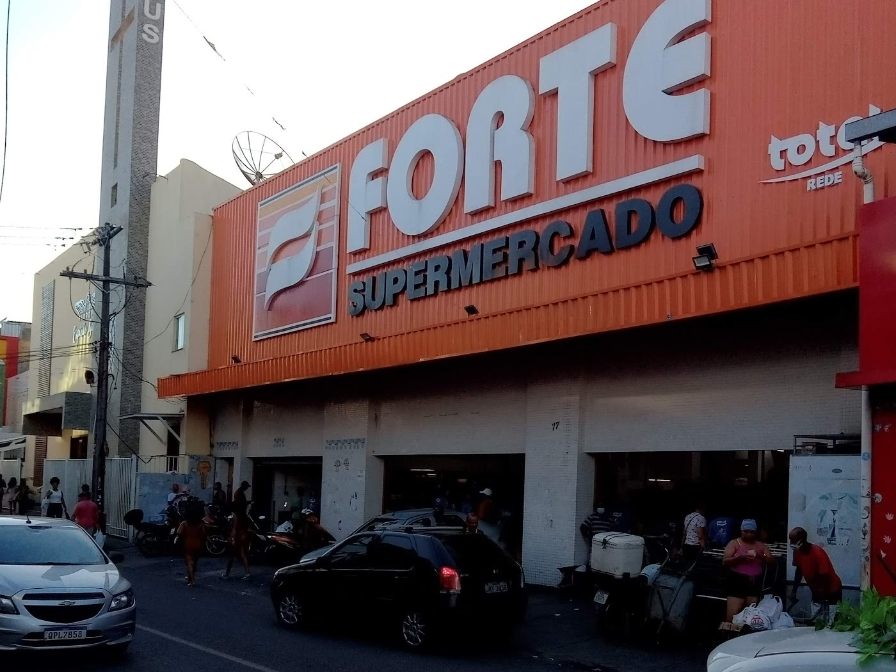

Início · A loja
Quatro décadas no mesmo bairro.
A Forte é do Tancredo Neves. A loja cresceu com o bairro e mantém o mesmo jeito: corredor cheio, açougue, padaria e atendimento de quem conhece o cliente pelo nome.
Nossa história
40 anos de história.
É o que a loja conta na bio do Instagram: “Forte Supermercado - 40 anos de História 🧡”.
Desde a R. Bahia, 77, a Forte atende quem mora e trabalha no Tancredo Neves. Quatro décadas de um comércio de bairro, com açougue, padaria, hortifruti e mercearia no mesmo lugar.
A proposta é simples: resolver a compra da semana sem precisar sair do bairro, com ofertas que aparecem primeiro no Instagram e no grupo de WhatsApp.
Ver ofertas
Dentro da loja
O que você encontra.


Do bairro, para o bairro
Uma loja que o Tancredo Neves reconhece.
Quatro décadas no mesmo endereço, com o açougue, a padaria e o corredor de sempre. Se você cresceu por aqui, provavelmente já passou pela Forte.
Como chegarQuem compra aqui